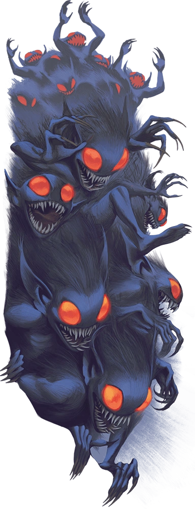

Session 1
September 1st, 2024 (CE)
Flamecrest 1, 32 (3rd Age)
We begin in Yewdon, where the winters are mild, and the summers are wet and damp.
Going in the same direction on converging paths, Penelope and Gerda meet. They discuss height differences and thought- versus leg-powered locomotion with a juxtaposition of skepticism and enthusiasm. Penelope mentioned Steel Jack, a mentor she'd had.
They see a wide open plain ahead of them with two trees among the emptiness where a forest used to be.
They notice a vortex of leaves ahead around Elwing. Penelope greets him, and he gives curt replies. Penelope reveals that she's here because of a dream. Elwing is too, sort of. Gerda indicates that she, too, has had a dream, but recoils at Penelope's enthusiasm. Given what they share in common, Penelope comments on the group being a "Dream Team."
The wind picks up, and some dark clouds start rolling in, indicating rain within the hour. They see a collection of abandoned, ruined homes off ahead, on the way toward the twin trees. Gerda starts toward the collection of shelters, signaling to the others that they could join.
"Do you want to get wet?"
Penelope gives Elwing the nickname "Red," when he declines to give his name.
Rain begins, which Penelope has never seen before, to Gerda's astonishment.
As they continue, Gerda gathers kindling. Elwing notices that the closer they get to the houses, the cooler the air has gotten.
There are rifts in the ground, so dark and deep that the bottom can't be seen. A strange noise emits from the manor, separate from the creaky gate swinging in the wind. It sounds like it could have been chattering voices, turning into a wailing scream, which fades into the chattering, followed by a wailing scream again.
Red and Penelope are concerned, but Gerda is unbothered. When she sees how earnestly concerned Penelope is about the sound, however, she pauses. As they make their way around the manor and hear the wail again.
Elwing tells the others that he's going to find the source of the sound, but that he won't be taking care of them if they follow.
Inside, there are piles of skin, dead bodies in various states of decomposition, brooms, junk, equipment. It's messy, but there is intent in the organization.
A tall figure in the darkness of the barn emerges, swinging a tube on a string, which makes the wailing noise they had been hearing. The creature's other three arms are waving frantcally.
Elwing speaks to the creature in Sylvan, asking who they are. It replies in an insectoid clicking sound, saying telepetathically "Friend, Friend."
"Hello, hello. Do you like music?"
Its three arms continue waving hard, expressing a fervent greeting, as it swings the screaming device.
Gerda draws her chef's knife to the ready. Penelope puts their welding mask down.
Friend puts on some sunglasses.
Penelope and Friend establish a rapport, donning and removing their respective face coverings, while Gerda and Red look on in bewilderment.
Red asks what Friend is doing here. It beckons, chatters, and skitters toward the well, mentioning "Imaginary friends." The party follows; Penelope eagerly, Red cautiously, and Gerda resignedly.

Friend excitedly and frantically shows off its collection of "wands," bones, fur (lots of purple fur), books, and maps.
Gerda's eye is caught by a rowan wand, and for a moment, she moves to pick it up, before stopping herself. Noticing, Friend offers the wand to Gerda, which she cautiously accepts.
Red asks if Friend is there alone, or if there are others. In response, Friend introduces the various dummies and dressing dolls as its friends. Bartholomew, Steve, Teapot, and Daisy are seated around a table set with what may once have been considered food.
Gerda again hears the chattering of many overlapping voices. Realizing her concern, Friend refers to the noises she must be hearing as "Stinkies," and sprinkles some purple pelts before them, repeating "Stinkies." The smell gives the distinctive stench of the Abyss. Friend points in the direction of the manor, indicating that many of the Stinkies were there.
Elwing billows his cloak about him, before packing it away again.
Penelope asked Friend whether they ought to be concerned about the Stinkies. Friend offers to show Penelope, and she agrees. Red follows, as does Gerda, despite her obvious skepticism as to the wisdom of this course of action.
The party climbs up the well into the dark of the night. They enter the manor, which is in disarray.
Friend interprets the chattering voices as they approach:
All hail the rotten Lord of the three threes! All hail the keeper of the ever lost!! Return to us, oh Shadow that Was!! Return!!!!!
Gerda clearly has trepidations about continuing, but Penelope and Red want to at least investigate, to know whether these demonic creatures were trying to summon something worse, and whether they were a threat.

When Gerda indicates that there are only just a few creatures, Penelope sees this as a reason to proceed, feeling that interrupting the summoning which she's sure must be taking place would make them heroes. They open the door, to see another hallway.
Feeling a familiar coldness emanating from a room opposite the hallway, Red goes to investigate, finding cavern roses, which he's seen in his world before. He is concerned by their presence, but doesn't have long to examine them before he's alerted to the sound of Friend and Penelope entering the room down the hall with the Stinkies.
Behind the door, which opens with no resistance, are three of the creatures. Penelope charges in, followed by Friend. Hearing the commotion, Gerda joined the fighting, filet knife in hand. Red was close behind. Successfully charming one of the creatures, Red asks it, "Why are you here?" It responds in Abyssal, which Friend interprets:
To make mischief and to eat (to eat, to eat).
You're powerful. We could use that. Give me some of your hair.
In response, he takes a swipe at the demon, which dodges, cackling, before biting Elwing. Penelope lunges forward, swinging an axe, before Friend stabs the creature, ending it.